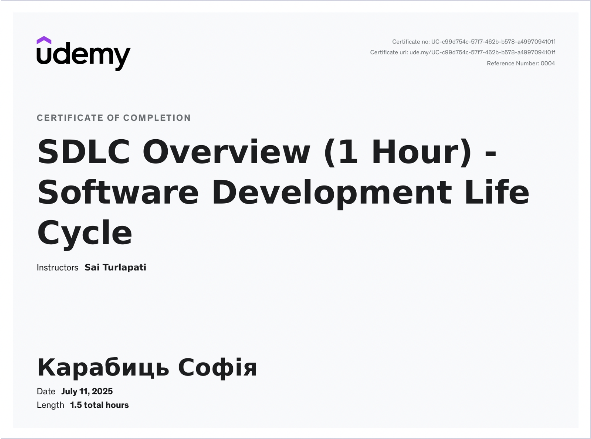

Cisco certificate on Introduction to Packet Tracer Exam. The exam was designed for 3 courses I've taken aswell (you can see those courses by clicking on the images of achivements);
Software Development Life Cycle course;

Currently I am taking "The Complete Full-Stack Web Development Bootcamp" course on Udemy (ua.udemy.com).